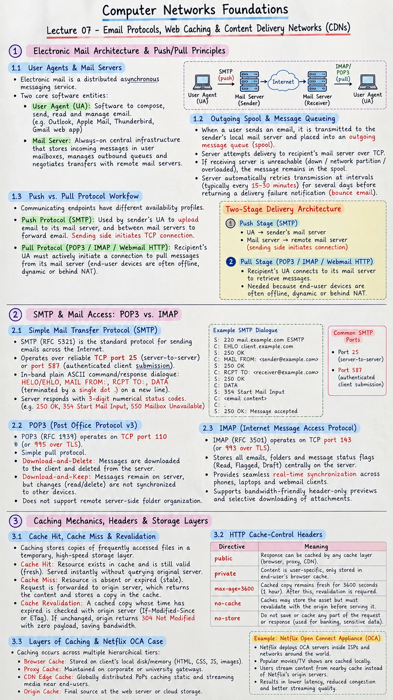

Short Notes & Visual Summary
Handwritten / quick summary notes for Lecture 07:

Click image to open high-resolution version in new tab
Electronic Mail Architecture & Push/Pull Principles
1.1 User Agents & Mail Servers
Electronic mail is a distributed asynchronous messaging service composed of two core software entities:
- User Agent (UA): Software that allows users to compose, send, read, and manage email (e.g., Outlook, Apple Mail, Thunderbird, Gmail web app).
- Mail Server: Always-on central infrastructure that stores incoming messages in individual user mailboxes, manages outbound message queues, and negotiates network transfers with remote mail servers.
1.2 Outgoing Spool & Message Queueing
When a user sends an email, it is transmitted immediately to the sender's local mail server, where it is placed into an outgoing message queue (spool):
- The server attempts delivery to the recipient's mail server over TCP.
- If the receiving server is unreachable (down, network partition, or overloaded), the message remains safely in the spool.
- The server automatically retries transmission at scheduled intervals (typically every 15–30 minutes) for several days before returning a delivery failure notification (bounce email).
1.3 Push vs. Pull Protocol Workflow
Email delivery requires distinct protocols because communicating endpoints have different availability profiles:
- Push Protocol (SMTP): Used by the sender's User Agent to upload the email to the sender's mail server, and used between mail servers to forward the email across the Internet. The sending side initiates the TCP connection.
- Pull Protocol (POP3 / IMAP / Webmail HTTP): End-user recipient devices are frequently offline, dynamic, or behind NAT firewalls. Therefore, the recipient's User Agent must actively initiate a connection to pull messages from its mail server mailbox.
SMTP & Mail Access: POP3 vs. IMAP
2.1 Simple Mail Transfer Protocol (SMTP)
SMTP (RFC 5321) is the standard protocol for sending emails across the Internet. Key characteristics include:
- Operates over reliable TCP port 25 (server-to-server relay) or port 587 (authenticated client submission).
- In-band plain ASCII command/response dialogue: commands like
HELO/EHLO,MAIL FROM:,RCPT TO:, andDATA(terminated by a single dot.on a new line). - Server responds with 3-digit numerical status codes (e.g.,
250 OK,354 Start Mail Input,550 Mailbox Unavailable).
2.2 POP3 (Post Office Protocol v3)
POP3 (RFC 1939) operates on TCP port 110 (or 995 over TLS). It is a simple pull protocol:
- Download-and-Delete: Messages are downloaded to the client device and permanently deleted from the mail server.
- Download-and-Keep: Messages remain on the server, but changes (such as reading an email or deleting it) on one device are not synchronized to other devices.
- Does not support remote server-side folder organization.
2.3 IMAP (Internet Message Access Protocol)
IMAP (RFC 3501) operates on TCP port 143 (or 993 over TLS). Designed for modern multi-device access:
- Stores all emails, folders, and message status flags (Read, Flagged, Draft) centrally on the server.
- Provides seamless real-time synchronization across phones, laptops, and webmail clients.
- Supports bandwidth-friendly header-only previews and selective downloading of attachments.
Caching Mechanics, Headers & Storage Layers
3.1 Cache Hit, Cache Miss & Revalidation
Caching is the technique of storing copies of frequently accessed files or computational results in a temporary, high-speed storage layer so future requests can be served significantly faster:
- Cache Hit: The requested resource exists in the cache and is still valid (fresh). The content is served instantly without querying the original server.
- Cache Miss: The requested resource is absent or expired (stale). The request is forwarded upstream to the origin server, which returns the content to the client while simultaneously storing a copy in the cache.
- Cache Revalidation: A cached copy whose time has expired is checked against the origin server (using HTTP headers like
If-Modified-SinceorETag) to verify if the file has changed. If unchanged, the origin returns304 Not Modifiedwith zero payload, saving bandwidth.
3.2 HTTP Cache-Control Headers
Web servers dictate caching behavior using HTTP response headers:
Cache-Control: public, max-age=3600
public: Response can be cached by any cache layer (browser, proxy, CDN).private: Content is user-specific (e.g., account profile) and can only be stored in the end-user's browser cache.max-age=3600: The cached copy remains fresh for 3600 seconds (1 hour). After this window, revalidation is required.no-cache: Caches may store the asset but must revalidate with the origin before serving it.no-store: Absolute restriction: do not save or cache any part of the request or response (used for banking and sensitive data).
3.3 Layers of Caching & Netflix OCA Case
Caching occurs across multiple hierarchical tiers along the client-to-server path:
- Browser Cache: Stored directly on the client's local disk/memory (HTML, CSS, JS, images).
- Proxy Cache: Maintained on corporate or university gateways to serve repeated web requests from multiple local network users.
- CDN Edge Cache: Globally distributed points-of-presence (PoPs) caching static and streaming media near end users.
- Reverse Proxy Server Cache: Deployed in front of the application origin (e.g., Nginx, Varnish, Redis) to offload repeated queries from primary backend databases.
Netflix serves over $15\%$ of global internet downstream traffic. Rather than streaming petabytes across transit backbones from AWS data centers, Netflix embeds custom storage appliances called Open Connect Appliances (OCAs) directly inside ISP networks and Point-of-Presence (PoP) locations worldwide:
- Individual OCA server racks hold up to 350 TB of popular video titles.
- During off-peak overnight hours, OCAs pre-populate with content forecasted to be in high demand.
- When a subscriber presses play, the video streams from an OCA server located just a few network hops away within their own ISP, bypassing the wider internet completely.
Content Delivery Networks (CDNs) Architecture
4.1 CDN Overview & The Grocery Store Analogy
A Content Delivery Network (CDN) is a geographically distributed network of proxy servers and data centers designed to deliver web assets (HTML, CSS, JavaScript, images, 4K video) to users with high availability and high performance.
Imagine if every time you wanted to buy milk or apples, you had to travel directly to the dairy farm or fruit orchard located 2,000 miles away. The trip would take days, cost immense fuel, and cause massive traffic congestion at the farm gate.
Instead, grocery store chains build regional retail stores in every neighborhood and restock them from the central farms. When you need groceries, you walk to the local neighborhood supermarket. A CDN works identically: the origin server is the distant farm, and the CDN edge servers are the local grocery stores placed close to consumers.
4.2 Edge Server vs. Origin Server Mechanics
- Origin Server: The primary hosting server where the authoritative source code, database, and primary content reside (e.g., an AWS EC2 instance in Virginia).
- Edge Server (PoP): Caching servers positioned at the "edge" of the internet near end-user access networks (e.g., in London, Tokyo, Mumbai, São Paulo).
- Request Flow:
- User browser requests an asset (e.g.,
https://cdn.example.com/hero.png). - DNS automatically routes the user to the geographically closest CDN Edge Server (via Anycast routing or Geo-DNS).
- If the Edge Server has the file cached (Cache Hit), it serves the user in a few milliseconds.
- If not cached (Cache Miss), the Edge Server queries the Origin Server once, saves the copy locally, and returns it to the user.
- User browser requests an asset (e.g.,
4.3 History, Major Providers & Detection Tools
- Pioneer: Akamai Technologies pioneered the commercial CDN industry in 1998, founded out of MIT research to solve the "World Wide Wait" web congestion problem.
- Leading Cloud & CDN Providers:
- Akamai
- Cloudflare
- Fastly
- Amazon CloudFront (AWS)
- Google Cloud CDN
- Microsoft Azure CDN
- CDN Detection Tools: Web diagnostic platforms like CDNPlanet or
cdnplanet.comallow engineers to inspect HTTP headers (e.g.,cf-cache-status,x-cache,server) to detect which CDN powers any public domain.
CDN Benefits & Fastly Outage Case Study
5.1 The 5 Core CDN Benefits Matrix
| Benefit | Mechanism | Business Impact |
|---|---|---|
| 1. Reduced Latency | Shortens physical distance data travels; terminates TCP/TLS handshakes at local edge PoPs. | Near-instant page loads; higher conversion rates and lower bounce rates. |
| 2. Extreme Scalability | Absorbs massive traffic spikes across thousands of distributed edge nodes. | Survives viral social spikes, Black Friday shopping surges, and flash sales. |
| 3. Enhanced Security | Absorbs multi-terabit Distributed Denial of Service (DDoS) attacks; integrates Web Application Firewalls (WAF). | Protects origin IP addresses from discovery and prevents volumetric outages. |
| 4. Bandwidth Cost Reduction | Caches static assets at the edge, reducing data egress from origin cloud providers. | Drastically lowers AWS/GCP/Azure outbound egress bills (often by 50%–80%). |
| 5. Resilience & High Availability | Automatic failover; serves stale cached pages if the origin database crashes. | Guarantees 99.999% uptime even during upstream data center outages. |
5.2 June 2021 Fastly Outage Incident Analysis
On June 8, 2021, an incident demonstrated the world's absolute dependency on CDN infrastructure:
- What Happened: A customer of CDN provider Fastly pushed a valid, standard configuration change that unexpectedly triggered an undiscovered software bug in Fastly's edge routing software.
- Global Impact: Approximately $85\%$ of Fastly's global CDN network failed simultaneously. Instantaneously, major worldwide websites became unreachable, returning
503 Service Unavailableerrors. Impacted services included:- E-Commerce: Amazon.com
- Social & Tech Platforms: Reddit, Spotify, Twitch, GitHub, Stack Overflow
- Major News Organizations: The New York Times, CNN, BBC, The Guardian, Financial Times
- Government Services: The UK government's primary portal (gov.uk)
- Resolution: Fastly engineers identified the issue within 40 minutes, disabled the buggy configuration, and restored $95\%$ of network traffic within an hour.
- Architectural Takeaway: Modern internet applications rarely connect directly to origin servers. While CDNs provide immense speed, caching, and security, placing an entire service behind a single centralized CDN creates a concentrated single point of failure (SPOF), prompting enterprise architectures to adopt multi-CDN redundancy strategies.
Original PDF Notes
Below is the original PDF document for reference: